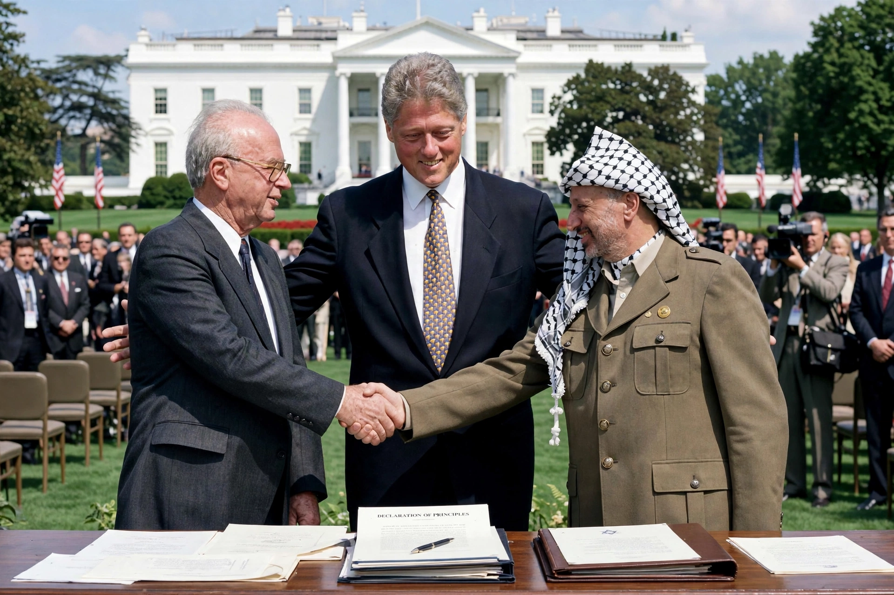

The Oslo Accords are agreements between Israel and the PLO that created the Palestinian Authority and a framework for interim self-government, intended to lead to a final-status peace treaty.
Secret Norwegian-facilitated talks in Oslo followed the Madrid Conference and the First Intifada. Mutual recognition letters preceded the Declaration of Principles signed in Washington in 1993, with the famous handshake between Yitzhak Rabin and Yasser Arafat.
Oslo II divided the West Bank into Areas A, B, and C, phased Israeli withdrawals, and security cooperation. Final-status issues — Jerusalem, refugees, settlements, borders — were deferred. Rabin's assassination (1995), settlement growth, suicide bombings, and the failure of Camp David (2000) and outbreak of the Second Intifada undermined the process, though the PA and Area division persist.